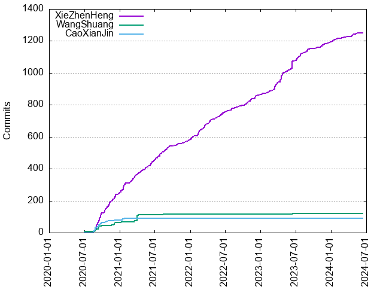

Authors
| Author | Commits (%) | + lines | - lines | First commit | Last commit | Age | Active days | # by commits |
|---|
| XieZhenHeng | 1251 (85.68%) | 104333 | 34850 | 2020-07-30 | 2024-06-12 | 1412 days, 21:42:04 | 521 | 1 |
| WangShuang | 121 (8.29%) | 11689 | 6188 | 2020-06-30 | 2023-06-12 | 1077 days, 1:12:35 | 32 | 2 |
| CaoXianJin | 88 (6.03%) | 8702 | 6844 | 2020-08-10 | 2021-01-21 | 164 days, 10:45:10 | 26 | 3 |

| Month | Author | Commits (%) | Next top 5 | Number of authors |
|---|
| 2024-06 | XieZhenHeng | 1 (100.00% of 1) | | 1 |
| 2024-05 | XieZhenHeng | 7 (100.00% of 7) | | 1 |
| 2024-04 | XieZhenHeng | 17 (100.00% of 17) | | 1 |
| 2024-03 | XieZhenHeng | 5 (100.00% of 5) | | 1 |
| 2024-02 | XieZhenHeng | 9 (100.00% of 9) | | 1 |
| 2024-01 | XieZhenHeng | 18 (100.00% of 18) | | 1 |
| 2023-12 | XieZhenHeng | 11 (100.00% of 11) | | 1 |
| 2023-11 | XieZhenHeng | 22 (100.00% of 22) | | 1 |
| 2023-10 | XieZhenHeng | 8 (100.00% of 8) | | 1 |
| 2023-09 | XieZhenHeng | 12 (100.00% of 12) | | 1 |
| 2023-08 | XieZhenHeng | 20 (100.00% of 20) | | 1 |
| 2023-07 | XieZhenHeng | 43 (100.00% of 43) | | 1 |
| 2023-06 | XieZhenHeng | 58 (93.55% of 62) | WangShuang | 2 |
| 2023-05 | XieZhenHeng | 16 (100.00% of 16) | | 1 |
| 2023-04 | XieZhenHeng | 63 (100.00% of 63) | | 1 |
| 2023-03 | XieZhenHeng | 50 (100.00% of 50) | | 1 |
| 2023-02 | XieZhenHeng | 17 (100.00% of 17) | | 1 |
| 2023-01 | XieZhenHeng | 10 (100.00% of 10) | | 1 |
| 2022-12 | XieZhenHeng | 25 (100.00% of 25) | | 1 |
| 2022-11 | XieZhenHeng | 18 (100.00% of 18) | | 1 |
| 2022-10 | XieZhenHeng | 23 (100.00% of 23) | | 1 |
| 2022-09 | XieZhenHeng | 12 (85.71% of 14) | WangShuang | 2 |
| 2022-08 | XieZhenHeng | 19 (100.00% of 19) | | 1 |
| 2022-07 | XieZhenHeng | 12 (100.00% of 12) | | 1 |
| 2022-06 | XieZhenHeng | 26 (100.00% of 26) | | 1 |
| 2022-05 | XieZhenHeng | 17 (100.00% of 17) | | 1 |
| 2022-04 | XieZhenHeng | 30 (100.00% of 30) | | 1 |
| 2022-03 | XieZhenHeng | 36 (100.00% of 36) | | 1 |
| 2022-02 | XieZhenHeng | 40 (100.00% of 40) | | 1 |
| 2022-01 | XieZhenHeng | 22 (100.00% of 22) | | 1 |
| 2021-12 | XieZhenHeng | 19 (100.00% of 19) | | 1 |
| 2021-11 | XieZhenHeng | 8 (100.00% of 8) | | 1 |
| 2021-10 | XieZhenHeng | 13 (100.00% of 13) | | 1 |
| 2021-09 | XieZhenHeng | 21 (100.00% of 21) | | 1 |
| 2021-08 | XieZhenHeng | 30 (93.75% of 32) | WangShuang | 2 |
| 2021-07 | XieZhenHeng | 39 (100.00% of 39) | | 1 |
| 2021-06 | XieZhenHeng | 36 (100.00% of 36) | | 1 |
| 2021-05 | XieZhenHeng | 25 (100.00% of 25) | | 1 |
| 2021-04 | WangShuang | 37 (55.22% of 67) | XieZhenHeng | 2 |
| 2021-03 | XieZhenHeng | 41 (82.00% of 50) | WangShuang | 2 |
| 2021-02 | XieZhenHeng | 13 (100.00% of 13) | | 1 |
| 2021-01 | XieZhenHeng | 57 (85.07% of 67) | CaoXianJin, WangShuang | 3 |
| 2020-12 | XieZhenHeng | 40 (64.52% of 62) | WangShuang, CaoXianJin | 3 |
| 2020-11 | XieZhenHeng | 48 (90.57% of 53) | WangShuang | 2 |
| 2020-10 | XieZhenHeng | 40 (80.00% of 50) | CaoXianJin, WangShuang | 3 |
| 2020-09 | XieZhenHeng | 96 (63.58% of 151) | CaoXianJin, WangShuang | 3 |
| 2020-08 | CaoXianJin | 33 (45.83% of 72) | XieZhenHeng, WangShuang | 3 |
| 2020-07 | WangShuang | 5 (62.50% of 8) | XieZhenHeng | 2 |
| 2020-06 | WangShuang | 1 (100.00% of 1) | | 1 |
| Year | Author | Commits (%) | Next top 5 | Number of authors |
|---|
| 2024 | XieZhenHeng | 57 (100.00% of 57) | | 1 |
| 2023 | XieZhenHeng | 330 (98.80% of 334) | WangShuang | 2 |
| 2022 | XieZhenHeng | 280 (99.29% of 282) | WangShuang | 2 |
| 2021 | XieZhenHeng | 332 (85.13% of 390) | WangShuang, CaoXianJin | 3 |
| 2020 | XieZhenHeng | 252 (63.48% of 397) | CaoXianJin, WangShuang | 3 |